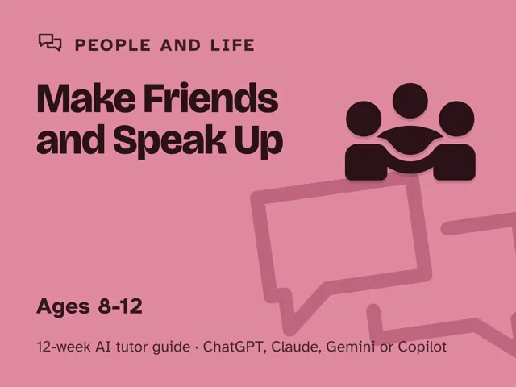
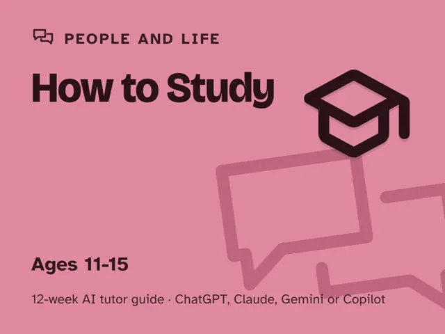

How to Study
$29Instant download: a PDF to read, a browser copy, and the AI-tutor file you hand straight to any AI assistant.Buy it on Etsy →
Take the free placement check first: 15 minutes, and it names the week to start at.
School hands out assignments and tests but almost never teaches kids HOW to study for them. This is a done-for-you, 12-week plan for guiding an 11–15-year-old through the meta-skills school assumes they already have: taking notes that actually help, remembering instead of cramming, reading a textbook for real, planning a week of homework, beating procrastination, and studying for a test the smart way, using an AI tutor to coach the strategy on the learner's REAL schoolwork, while you do the leading. You do not need to know their coursework.
What you get
- 12 deep weekly sessions, each fully scripted for a ~60-minute sit-down: a plain-language concept explanation, a concrete worked example, a minute-by-minute session plan with the AI-tutor prompts built in (nothing to write yourself), a "show me" checkpoint so you always know it landed, common mistakes to watch for, and independent practice.
- "Never used an AI chat assistant? Start here": a five-minute onboarding that takes a complete beginner from zero to ready: which free AI assistant to open, how to start a chat, and how to paste a prompt. No paid plan needed.
- A parent/teacher orientation that takes ten minutes to read: how to sit beside a learner using AI, why the adult stays the leader and the AI is the tutor, and exactly what your one ~60-minute session a week looks like.
- Four rescue prompts in the front matter for when the learner is frustrated, bored, stuck, or shuts down, plus a "don't do the homework for me" guardrail baked into every session's prompts.
- No expertise needed: every step is timed and written out for you.
The 12 weeks
- How Learning Actually Works: why re-reading feels productive but isn't
- What's Actually Hard Right Now: an honest diagnostic, picks a practice subject
- Taking Notes That Help Later-You
- Remembering Instead of Cramming: active recall and spacing
- How to Read a Textbook: for real, not just scanning
- Understanding vs. Memorizing: the right tool for each
- Planning Your Week & Assignments
- Beating Procrastination: starting instead of stalling
- Studying for a Test the Smart Way: a real countdown plan
- Asking for Help Well: turning "I don't get it" into a real question
- Project Week I: Plan Your Real Study Plan (for a real upcoming test)
- Project Week II & Demo Day: Run the Plan (and pick the next study goal)
Who it's for
Parents, teachers, and homeschoolers guiding a learner aged 11–15. No teaching background needed, and you don't need to have used AI before. The guide walks you through your first AI chat in about five minutes, then leads you through one fully scripted ~60-minute session each week. Works whether your learner is disorganized, an anxious crammer, or just never learned a better way. Every week practices on their real classwork, so it pays off in this term's grades, not just a workbook.
Why this instead of a free chatbot
A raw chatbot will happily summarize the chapter or write the study notes for your learner, which teaches nothing and leaves them right back where they started before the next test. This pack ships the structure a chatbot lacks: a real 12-week arc from diagnosis to a study plan run on an actual upcoming test, Socratic prompts that make the tutor coach the strategy instead of doing the work, guardrails that stop it from writing the notes on request, and checkpoints that prove the learner can do it themselves. Curriculum + guardrails + a way to see progress. That's the difference.
FAQ
- Do I need to know my child's coursework? No. The AI tutor coaches the strategy; you lead. Every session comes with the exact prompt to start it.
- Which AI does it use? What if I've never used one? Works with any modern AI assistant: ChatGPT, Claude, Copilot, or Gemini. Free versions are enough; no paid plan needed. If you've never opened an AI chat before, the guide's first section walks you through setup in about five minutes before Week 1 begins.
- Is my child's data collected? No. This is a digital guide sold to you, the adult. There's no login and no child account; you start and supervise each session under your own account.
- Is this the same as your Learn Anything pack for adults? No. That pack is for self-directed adult learners exploring any topic. This one is built squarely for school (real classes, real notes, real tests) and is written for a learner aged 11–15 with an adult leading.
- What if my child's classes change mid-pack? The strategies aren't tied to one subject. Week 2 has the learner pick a practice subject, but every skill transfers to any class, so switching is easy.
- What ages? Roughly 11–15. The guide is written in US English, and every AI prompt tells the tutor to use your country or region for spelling, school terms, and examples.
- Refunds? Standard marketplace refund policy applies.
$29Instant download: a PDF to read, a browser copy, and the AI-tutor file you hand straight to any AI assistant.Buy it on Etsy →